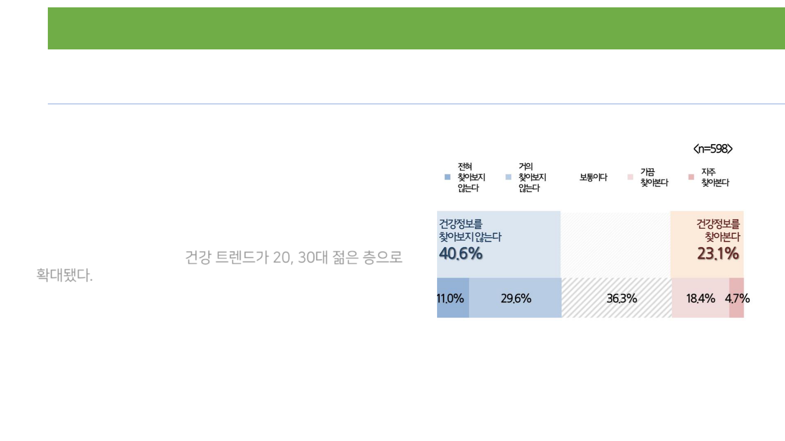
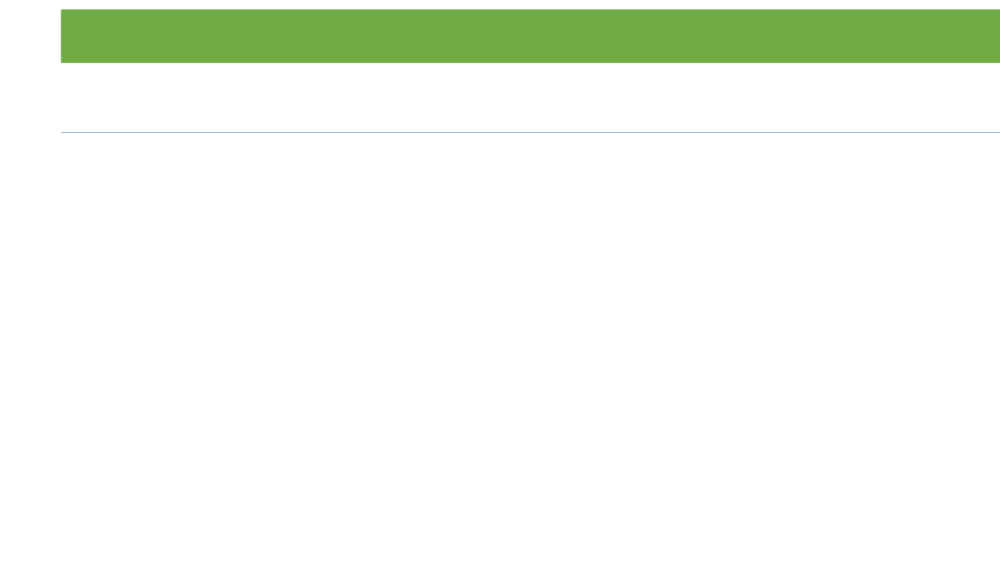

Copyrightⓒ. Saebyeol Yu. All Rights Reserved.
융합소프트웨어학과 60160295 최민지
UX 디자인
1
UX-design 과제

Copyrightⓒ. Saebyeol Yu. All Rights Reserved.
목차
UX 디자인
2
1
주제
2
타겟
3
데스크리서치
4
인터뷰
5
설문
6
아이디어의 방향
Discover Define
7
Persona
8
User Journey Map
Copyrightⓒ. Saebyeol Yu. All Rights Reserved.
목차
3
Develop Deliver
9
Scenario
10
Task Flow
11
Menu Structure
12
Wire Frame
13
Mood board
14
GUI(Propotype)
15
참고문헌
UX 디자인
Copyrightⓒ. Saebyeol Yu. All Rights Reserved.
주제선정_keyword
UX 디자인
4
001
주제
Keyword_ 한끼
‘나’와의 인터뷰
Q1. 나에게 ‘한끼’의 의미란?
하루의 행복이다. 또 사람을 만나는 시간이다.
Q2. 취미는?
먹어보지 못한 것을 찾아가서 먹는 것.
맛집 탐방.
개인적으로 인생에서 밥이 갖는 의미가 크다!
전과를 하고 수업, 과제에 치이다보니 나의 중요한 이슈는
“정해진 시간안에 모두 해내는 것.” 이 되었다.
그때 선택했던 것 중 하나는 밥을 대충 먹는 것이었다.
보통이라면 고민할 문제가 아닐지도 모르지만, 밥이 갖는 의미
가 크기에 개인적으로 스트레스가 생겼다.
나의 문제를
잘 해결해보고 싶어서 시작하게 되었다.
Copyrightⓒ. Saebyeol Yu. All Rights Reserved.
UX 디자인
5
001
주제
주제선정_keyword
어떤 주제를 선정할지 마인드맵을 통해 키워드를 정리했다.
혼밥, 혼밥할 공간, 1코노미, 영양불균형, 혼밥시 외로움 등 여러가지 키워드 중에서 영양불균형 문제를 선택했다.
Copyrightⓒ. Saebyeol Yu. All Rights Reserved.
선정한 주제_어떻게 하면 맛있고 영양 있는 식사를 할 수 있을까?
UX 디자인
6
001
주제
Copyrightⓒ. Saebyeol Yu. All Rights Reserved.
타겟_20대, 30대 초반 남자와 여자.
UX 디자인
7
002
타겟
영양 문제를 가장 많이 겪고 있는 연령대는 선정한 타겟이 아닐 수도 있다.
하지만 선정한 타겟 만의 문제(특이점)가 있을 것으로 생각 되어 20대, 30대 초반으로 선정하였다. 남/여 모두 해당된다.
이 안에서 대학생과 사회초년생이 주 타겟이 될 것이다.
영양 문제에 대해서는 부모님과 떨어져 독립하게 된 사람에 초점을 맞출 수도 있지만 독립하지 않더라도 영양 문제가 있
다고 판단하였다. 그래서 범위를 넓게 선정하였다.
선정한 타겟 만의 문제?
- 영양 과섭취
- 패스트푸드점, 편의점 이용률이 높음.
- 음주 습관
- 건강 정보에 대해서 잘 찾아보지 않는 것.
- 본인의 영양/건강 상태에 대해서 잘 모름. 불안감이 적음.
UX 디자인 8
003
데스크리서치
20대, 30대 젊으면 건강할까?
17359
18390
19780
21927
24106
0
5000
10000
15000
20000
25000
30000
2013 2014 2015 2016 2017
20대 당뇨병 환자 수
20대 당뇨 환자 수이다. 5년간 38.9%가 증가했다.
증가율이 다른 연령대에 비해서 빠르게 증가하고 있다.
UX 디자인 9
003
데스크리서치
20대, 30대의 영양섭취
20~30대 청년층을 포함한 1인 가구가 혼자 식사를 할 때 가장 많이 선택하는 메뉴는 라면이다. 밥과 반찬으로 구성된 백
반에 이어 빵·김밥·샌드위치도 순위권을 차지했다. 이런 1인 가구의 ‘혼식’ 메뉴 순위는 백반-고기류-찌개-해산물 요리-
중식으로 이어지는 ‘가족 식사’ 메뉴 순위와 크게 비교된다.
그러나 편의점 식사는 ‘번갯불 식사’를 상징한다. 청년들이 편의점 식사를 하는 주요 이유가 바로 ‘밥 먹을 시간이 부족해서’
다. 달 90만원 이상의 용돈을 받는 청년은 한 달 식비로 33만4000원을 쓰지만 30만원 미만의 용돈을 받는 청년은 20만
7000원만 식비로 할당했다. 청년들이 경제적 여유가 부족할 때 가장 먼저 줄이는 지출 가운데 하나도 식비(85%)다.
UX 디자인 10
003
데스크리서치
20대, 30대의 영양섭취
식생활면에서도 불건강행태가 나타났다. 1인가구의 혼자식사 비율은 91.8%로 다인가구 20.9%보다 압도적으로
높았다. 혼자식사시 20대 비만인은 정상 또는 저체중군에 비해 빨리 더 많이 먹고, 배가 불러도 음식이 남으면 더
먹는 것으로 나타났다. 식사 속도가 빠르면 비만, 혈중 중성지방 수치가 높아진다.
- 영양 섭취에 관심이 있다. 하지만 방법을 모른다.
UX 디자인 11
003
데스크리서치
20대, 30대의 영양섭취
과일과 채소를 권장 섭취량만큼 충분히 먹는 국민이 10명 중 4
명에 그치는 것으로 나타났다. 과일·채소의 권장 섭취량은 하루
500g 이상이다. 그러나 질병관리본부의 국민건강통계에 따르면
2016년을 기준으로 이를 충족하는 사람은 전체의 37.9%로 매
우 적다.
남성의 섭취율은 40.9%, 여성은 34.9%였다. 평균 섭취량으로
보면 남성이 319.5g, 여성이 241.8g이었다. 여성은 권장량의
절반에도 못 미치는 수준이다. 소아청소년(만 6~19세)의 경우
전체의 20.6%만이 권장 섭취량을 먹는 것으로 나타났다. 이어
20대 23.6%, 30대 34.7%, 40대 43%, 50대 53.5%, 60대
55%

UX 디자인 12
003
데스크리서치
20대, 30대 건강에 대한 관심
건강정보에 대해서 탐색하려는 경향은 보이지 않는다.
건강 정보 탐색
최근 소셜커머스 업체 위메프가 세대별 인기 검색어를 발표했다.
전 세대에 걸쳐 건강에 대한 관심이 높은 것으로 나타난 것 가운
데 20대 인기 검색어에 '닭가슴살'이 올라 있어 눈길을 끌었다.
이전까지는 건강식품 하면 중장년층이 주로 구매하는 건강보조
식품이나 건강기능식품, 영양제 등을 떠올렸다. 그러나 최근에는
건강식품이 건강한 식습관, 균형 잡힌 식단, 마른 몸이 아닌 건강
한 신체 등과 연결되면서 건강 트렌드가 20, 30대 젊은 층으로
확대됐다.
UX 디자인 13
003
데스크리서치
20대, 30대 건강에 대한 관심
20~30대가 많이 이용하는 SNS, Instagram
건강식단, 식단관리 등과 관련된 게시글이 많다.
건강에 대한 관심도가 높다!
UX 디자인 14
004
설문
설문조사 설명
구글 폼을 이용해 ’당신의 한끼가 궁금합니다.’
를 주제로한 설문을 제작하였다. 13문항이다.
20대 대학생 24명을 대상으로 하였으며
이틀간 진행하였다.
목적
타겟의 식생활에 대해서 알아보는 것이 설문의 가
장 큰 주제이고 목표이다.
- 주거 생활에 따라 식습관이 다른지 알아본다.
- 메뉴를 선택할 때 어떤 것이 영향을 주는지 알아
본다.
- 식생활이 얼마나 영양균형적이라고 생각하는지
알아본다.
UX 디자인 15
004
설문
설문조사 질문
UX 디자인 16
004
설문
설문조사 질문
UX 디자인 17
004
설문
설문조사 질문
UX 디자인 18
004
설문
설문조사 결과
1번 ~ 3번 기본 조사
남성 :10명 여성 :14명
25세 미만 : 17명 25~30세 : 7명
모두 대학생
가족 구성원과
함께 지냄, 16
자취, 6
기숙사, 2룸쉐어, 0
가족 구성원과 함께 지냄 자취 기숙사 룸쉐어
4번 주거형태
가족 구성원과 함께 지내는 사람이 16명으로 가장 많
았다. 독립한 사람 중에서는 자취를 하는 비율이 가장
높았다.
UX 디자인 19
004
설문
설문조사 결과
5번 하루에 몇끼를 언제 먹는지
대부분이 아침식사를 하지 않는 것을 알 수 있다. 점
심과 저녁 두끼를 먹는 경우가 가장 많았다.
6번 하루 외식 횟수
1회가 12명, 2회가 10명으로 가장 많았다.
7번 외식시 드는 비용
3700원 ~ 20000원까지 넓은 범위에 있다.
평균 비용은 약 8600원이다.
많은 응답자가 한끼에 쓰는 비용은 고정적이지 않
다고 말했다.
8번 외식시 희망 비용
약 6600원이다.
UX 디자인 20
004
설문
설문조사 결과
10번 어제 먹은 음식
닭볶음탕, 닭가슴살 샐러드,된장찌개, 계란찜, 파스타,
치킨, 불백,라면, 닭갈비,파스타,볶음밥,어묵탕, 빵, 닭도
리탕,햄버거(싸이버거),꼬막,참치,떡볶이 과자,죽,빵
돈까스,김치볶음밥,돼지불백,두부된장국, 쌈채소,김치,
현미밥, 학식, 케밥, 소떡소떡, 비빔국수, 맥도날드 상하
이 스파이시버거 세트, 베가 보쌈,도이치바이트피자
돈까스,불고기, 냉모밀, 치즈수제햄버거, 감자튀김, 나베
맘스터치 싸이버거,제육+두부덮밥,바나나,샤브샤브, 커
리,모밀
- 햄버거, 피자 등 패스트푸드가 많이 보인다.
11번
가격을 가장 고려하며, 맛과 그날의 기분을 고려한
다.
UX 디자인 21
004
설문
설문조사 결과
12번
13번
14번 영양 있는 식단이 필요하다고 느낀 적 있는지
예 : 23명 / 아니오 : 1명
15번 한끼를 먹는 다는 것은 어떤 의미인지
영양균형적인 식단이라 생각하는지에 대해선 그렇지 않다고 응답한 사람(13명)이 많았다. 이에 비해서 건강의 관심
도는 높다고 응답한 사람(14명)이 더 많다.
#힘 #충전 #에너지 #대화 #배고파서 먹는다.
와 같은 키워드가 많이 등장하였다.
UX 디자인 22
004
설문
설문조사 정리
본인의 식생활은 영양 균형적이지 않다고 생각하며 영양있는 식단을 원한다!
또 건강에 대한 관심은 높다.
독립 여부에 따라서 영양 균형적이라고 느끼는지에 따라 차이가 존재할 수 있다고 생각했지만,
독립여부와는 관련이 없었다. 외식 비율이 높은 것을 보아 주거 공간이 어떻든 간에 외부에 있는 시간이 많기 때문이라고
생각한다.
-> 영양 문제에 영향을 주는 요인은 어떤 것이 있는지 조사해야 한다.
식사 메뉴를 정할 때 가격이 가장 큰 고려 요소다! 영양에 우선순위를 높게 준 사람은 한 명도 없었다.
-> 아이디어를 생각 할 때 이를 꼭 고려해야한다.

UX 디자인
23
005
인터뷰
인터뷰 방법
설문조사 후에 궁금한 사항들에 대해서 더 깊이 질문하고, 그 외에 궁금한 점들을 인터뷰 하였다.
자취를 하고 있는 남자, 여자 총 2명과 인터뷰를 실시했다.
이름 :김영찬
나이 : 24살
성별 : 남자
특징
- 본가가 멀어 독립하였음.
자취 중이다.
- 매우 바쁘다. 집에 있는 시간이 적다.
이름 : 최은지
나이 : 23살
성별 : 여자
특징
- 본가가 멀어 독립하였음. 자취 중이다.
- 자취 4년차다.
UX 디자인
24
005
인터뷰
‘김영찬’과 인터뷰_ 질문 & 답변
하루에 몇 끼를 먹나요?
어디서 먹나요?
집에서 먹는 이유는 무엇인가요?
두끼. 점심, 저녁을 먹는다.
보통은 식당에서. 일주일에 1~2번 한 끼는 집에서 먹는다.
(목, 금요일)
내가 하고 싶은 요리를 할 수 있기 때문임.
돈도 아낄 수 있음. 밤마다 좋아하는 술이랑 야식 먹는 것
이 행복.
인터뷰 날짜
2019.05.14
외식시 가장 좋아하는 음식은 무엇인가요?
밥버거, 피자스쿨. 가격이 싸고 가깝다.
UX 디자인 25
005
인터뷰
‘김영찬’과 인터뷰_ 질문 & 답변
요리 할 때 가장 많이 해먹는 메뉴는?
장볼 때 얼마나 돈이 드나요?
장볼 때 어떤 것을 사나요?
원래 요리하는 것을 좋아하나요?
찌개, 안주류, 콩나물 불고기. .
6000~7000원.
마늘, 버섯, 삼겹살. 야채는 소분 된 것. 고기는 한번에 많
이 구매한다. (싸니깐)
좋아한다. 본가에 있을 땐 실험적인 요리를 많이 했다. .
장 은 어디서 보나요?
야채류도 구매하나요?
요리 할 때 불편한 점이 있나요?
1주일에 1번 집 주변에 있는 동네 마트에서 본다. 가까워
서 간다.
야채는 많이 산다. 평소에 먹지 못하니깐 의식적으로 산다.
뒷처리가 불편함. 원룸이어서 싱크대가 작다.
UX 디자인 26
005
인터뷰
‘김영찬’과 인터뷰_ 질문 & 답변
요리 할 땐 양양(건강)을 고려하나요?
영양균형적인 식사를 원하나요?
밥 먹을 때 혼자 vs. 여러사람
밥먹을 때 행복한가요? 어떤 의미인가요?
고려한다. 운동을 많이 하는 편이다. 다 체력으로 가니깐
중요하다.
애매하다. 원하기도 하고 않기도 하다. 맛있으려면 영양이
없어야한다. 건강한 맛은 따로 있으니깐. 두개 다 원한다.
혼자 혹은 소규모(2~3명). 밥을 여럿이서 먹는 것은 회식
같다.
행복하다. 먹는 낙으로 산다. 운동하는 것도 먹기 위해서
다.
사먹는 음식은 건강하다고 생각하나?
아니다. 한식을 먹어도 그렇단 생각을 하지 않는다. 외식
을 하면 채소를 못먹는다.
UX 디자인 27
005
인터뷰
‘은지’와 인터뷰_질문 & 답변
장은 보는가?
요리를 해먹는가?
어떤 음식을 많이 먹는가?
요리를 해먹은 이유는?
몇 끼를 먹나요?
밥을 사먹는 횟수는?
2주에 한 번 정도 SSG배송 이용. 신선식품은 동네마트, 편
의점에서 구매.
작년까지는 해먹었음. 야채를 사긴했는데 썩어서 버리고
그런경우가 많았다. .
카페에서 케이크, 빵 많이 사먹음. 샌드위치도 많이 먹는다.
20살 때부터 독립을 함. 1,2,3학년 때는 사먹었기만 했는
데 몸이 안좋아졌음. 살려고 해먹었다.
소화도 잘 안됐다.
요리를 좋아하지는 않는다. 혼자 살다보니 조금해야하는
데 1인분만 만들기가 어렵다.
보통 두끼. 그 중 한끼는 대충 때운다.
적어도 하루에 한 번. 대충 먹을 땐 시리얼, 라면, 카레를 먹
는다.
인터뷰 날짜
2019.05.15
UX 디자인 28
005
인터뷰
‘은지’와 인터뷰_질문 & 답변
밥 먹는 것은 어떤 의미인가? 행복한가?
나의 식사 영양균형적이라고 생각하나?
영양을 위해서 어떤 서비스가 있으면 좋겠는가?
맛있는거 먹을 때 행복하다. 대충 먹을 때는 왜 이렇게 사
나 싶음. 친구들과 먹을 땐 재미다.
아니라고 생각한다. 탄수화물 밖에 없다.
적은 재료로 간단하게 만들어먹을 수 있는
레시피. 영양정보가 있어도 와닿진 않는다.
UX 디자인 29
005
인터뷰
요약 & 정리
김영찬
- 요리가 취미인 사람이다. 일주일에 한번은 영양있는 음식을 요
리해 먹는다.
- 집에서 요리 해먹는 것은 건강 때문도 있지만 삶의 행복과도
연결된다.
- 밖에서 사먹는 음식은 건강하지 않음을 인지하고 있다.
- 밥 먹는 시간 = 휴식 시간인만큼 바쁘기 때문에 빨리 먹을 수
있는 음식을 선택한다. 한식을 사서 먹어도 영양가 있는 식사
라고 생각하지 않는다.
- 운동을 좋아하고 체력관리에 관심이 많다. 영양 균형적인 식
사를 원한다.
최은지
- 보통 밥은 간단하게 먹는다. 과제가 많은 학교 생활을 하다 보
니 카페에서 베이커리류로 식사를 해결 할 때가 많다.
- 자취 3년차에는 건강(체력)에 이상을 심각하게 느낀적이 있음.
그래서 요리를 한 적이 있으나, 불편함을 느끼고 현재는 하지
않는다.
- 영양 균형적이지 않다고 생각한다. 하지만 어떻게 하면 영양
있는 식사를 할 수 있는지에 대해서 생각할 여유도 없고, 방법
도 모른다.
UX 디자인 30
005
인터뷰
인사이트
1. 건강하기 위해 먹는 것은 아니다. 영양균형적인 식사를 원하지만 맛과 가격이 더 중요하다.
-> 영양이 있는 음식은 맛이 없다는 생각을 바꾼다.
2. 식단이 건강하지 않다는 생각이 들지만 적극적으로 변화할 의지는 없다.
-> 식단을 변화시킬 수 있도록 도와준다.
영양균형적인 식사를 원하나요?
애매하다. 원하기도 하고 않기도 하다.
아니라고 생각한다. 탄수화물 밖에 없다.
아니다. 한식을 먹어도 그렇단(건강하단) 생각을 하지 않는다. 채소를 못먹는다.
UX 디자인 31
005
인터뷰
인사이트
3. 자취생이 요리를 해먹는 것은 쉽지 않은 일이다.
-> 자취생을 위한 레시피 등은 이미 많이 존재한다. 꼭 요리를 하지 않아도 영양섭취를 할 수 있는 방법을 제시한다.
4. 영양 불균형 적인 식단에 대해서 심각함을 인지하고 변화해보려 한 적이 있다.
-> 영양 상태에 대해 인지하도록 도와주고 동기를 주자!
20살 때부터 독립을 함. 몸이 안좋아졌음. 살려고 요리를 해먹었다.
야채는 많이 산다. 평소에 먹지 못하니깐 의식적으로 산다.
뒷처리가 불편함. 원룸이어서 싱크대가 작다.
작년까지는 해먹었음. 야채를 사긴했는데 썩어서 버리고 그런경우가 많았다.
Copyrightⓒ. Saebyeol Yu. All Rights Reserved.
UX 디자인
32
006
아이디어의 방향
샐러드를 먹는다 = 야채 가득, 건강함.
최근에 꽂힌 샐러드.
건강이 아니라 맛을 위해서 먹기 위해서 시작했다.
우리가 먹는 음식에서 건강한 음식을 찾아주는 것이 어떨까?
그래서 내가 먹는 음식의 영양에 관심을 갖도록 하면 어떨까?
고기 & 연어 ♡
Copyrightⓒ. Saebyeol Yu. All Rights Reserved.
UX 디자인
33
006
아이디어의 방향
건강한 맛집 추천 서비스 & 영양 자가 진단
1) 건강한 맛집 추천
설명 : 식당에서 영양정보를 기록하도록 하고, 적절히 가공하여 사용자에게 정보를 제공한다.
생각 해 볼 것.
기존의 맛집 정보와 차별화는?
건강한 맛집의 기준은 무엇일까? 누가 검증할 수 있을까? 다수의 이용자가 검증한다고 가능한 일일까?
구글 지도처럼 여러 사람들의 기록 데이터가 모여서 의미를 창출 할 수 있을까?
(구글 지도에서는 사람들의 위치 데이터를 이용하여 피크 시간대를 알려준다. 맛에 대한 평가가 존재한다.
이미지를 제공한다.)
2)스스로 영양상태를 기록
설명 : 카드결제 데이터(상호명)와 네이버 지도에 입력된 가게 정보 데이터를 이용한다.
이를 이용해 사용자가 쉽게 영양상태를 기록할 수 있도록 도와준다.
- 뱅크샐러드(신경꺼도 내 돈 관리, 자산관리 도움 APP)를 참고 하였다.
Copyrightⓒ. Saebyeol Yu. All Rights Reserved.
UX 디자인
34
006
아이디어의 방향
건강한 맛집 추천 서비스 & 영양 자가 진단
3) 개인별 영양상태 진단
설명 : 기록한 영양상태를 진단 후 적절히 알림해준다.
식품안전나라의 식품영양정보 DB를 활용
생각해 볼 것
어떤 알림을 해줘야 사용자에게 유용할까?
어떤 말을 통해 어떤 상태를 알려줘야할까?
이 서비스는 도움이 될까?

Copyrightⓒ. Saebyeol Yu. All Rights Reserved.
UX 디자인
35
영양진단 & 관리 어플
UX 디자인 36
007
persona
이름
김찬희
나이
24
직업
대학생(3학년)
거주
목포
가족
어머니, 아버지, 여동생(김은하), 반려동물(강아지)
경제수준
월 50만원 정도의 알바비 그리고 용돈
goal(슬로건)
체력
타겟 = 대학생, 남자
일정이 바빠 종종 동아리 방에서 혼자 밥버거나 라면을 먹기도한
다. 집에 있는 시간이 적기 때문에 요리를 해먹진 않는다. 부모님
과는 좋은 관계이다. 부모님은 가끔 밥은 잘먹고 다니는지 걱정
하신다.평소에 식생활이나 영양에 대해서는 걱정을 해본적이 있
다.
UX 디자인 37
007
persona
주요특징
서울에 있는 대학에 재학 중이다. 본가는 목포기 때문에 학교와 조금 가까운 역 주변에 자취를 하고 있다. 등록금은
부모님이 지원해주시지만 생활비는 아르바이트를 통해 직접 충당한다. 하지만 생활비는 부족하다고 느끼고있다. 학
업, 연애, 대외활동 어느 하나 놓치기 싫어한다. 바쁜 일상을 즐긴다. 집에있는 시간보다 밖에 있는 시간이 더 많다.
대학원에 진학하려는 목표를 갖고 있어서 학점을 신경쓰고 있다. 학교 주변에 자취방이 있긴하지만 거리가 조금 있
기도하고 할 일이 많아서 집에 찾아가진 못한다. 일정이 바빠 종종 동아리 방에서 혼자 밥버거나 라면을 먹기도한다.
집에 있는 시간이 적기 때문에 요리를 해먹진 않는다. 부모님과는 좋은 관계이다. 부모님은 가끔 밥은 잘먹고 다니는
지 걱정하신다.평소에 식생활이나 영양에 대해서는 걱정을 해본적이 있다. 건강에 대해서 걱정은 없지만 자기 관리
가 철저하기 때문에 건강 관리를 원한다. 운동하는 것을 좋아한다.
평일에는 학교생활에 충실하고 나머지 시간은 동아리 방에서 많은 시간을 보낸다. 주말에는 학교 외의 사람들을 만
나는 편이다. 혼자 밥을 먹는걸 좋아하지는 않지만 바쁜 일정 때문에 약속을 일일이 정할 수 없어 그냥 혼자 먹게된
다. 어떤 메뉴를 먹을지 크게 고민하지 않는다. 항상 먹는것만 사먹고 있다. 자기관리에 철저한 편이고 꼼꼼하다.

UX 디자인 38
008
User Journey Map
1. 백그라운드 설정
- 20대 여성 대학생이다.
- 부모님과 함께 산다.
- 평소에 야채와 과일을 먹지 않는다. 비타민 섭취량이 적다.
- 스마트폰 사용 시간이 길다.
- 하루에 2번 외식을 한다. 집밥은 잘 먹지 않는다.
- 새로운 기능을 좋아하긴 하지만 쉽게 질려하는 편이다.
- 밥을 먹을 때 가격을 가장 중요시 여긴다.
- 식단이 영양불균형하다 생각하지만 해결하고자하는 적
극적 의지는 없다.
- 집에 머무는 시간은 적다.
- 음식은 가리지 않는 편이다.
- 기름진 음식을 좋아한다.
- 매일 다른 메뉴를 먹는 것을 좋아한다.
- Togo 할 때 포장 쓰레기가 많이 나오는 것을 불편하게
생각한다.
- 밥 먹는 시간은 친구들을 만나는 행복한 시간이라고 생각
한다.
2. 타임라인에 해당하는 스토리 라인 만들기
- 공복상태로 학교로 출발한다. 이른시간에 아침수업이 있어
피곤해 커피를 마신다.
- 학교 수업이 끝난 후 행복한 점심시간이 된다.
- 메뉴를 잠시 고민하지만, 어젯밤에 술을 먹어 기름진 것
이 끌리는 상황이다.
- 친구 2명과 함께 피자를 먹으러 간다.
- 메뉴판을 보고 어떤 것을 먹을지 고민한다. 하루의
기분에 따라 가장 먹고 싶은 음식을 고른다.
- 계산을 한다. 약간 마음이 쓰라린다.
- 배가 너무 불러 점심을 먹고 친구와 함께 산책을 한다.
- 점심 때 나트륨이 많은 음식을 먹어서인지 목이
매우 마르다.
- 수업이 끝난 후 공부를 하기 위해 카페에 간다. 커피를
또 마신다.
- 늦은 밤 귀가를 한다.
밥을 먹는다.
UX 디자인 39
008
User Journey Map
하루의 식사
아침, 학교 앞 카페 점심 시간
메뉴 고민 식당 방문
(점심식사)
계산하기, 식
당에서 나가기
휴식
(산책)
카페로 이동
(저녁 식사)
귀가 집도
착
(
야식
)
Very good!
good!
So so!
Bad!
Worst!
UX 디자인 40
009
Scenario
아침, 학교 앞 카페
점심 시간
메뉴 고민
(점심식사)
식당 방문
계산하기, 식
당에서 나가기
휴식
(산책)
카페로 이동
(저녁식사)
귀가 집도착
(야식)
- 공복 상태에서 커피를
마셔도 되는지 고민이
되지만, 피곤을 쫓기 위
해 마신다.
- 친구와 어떤 메
뉴를 먹어야할지
고민을 한다.
- 식당에 방문한
다. 친구가 원하
는
메뉴이긴
하지
만
맛있는
식사를
한다.
- 친구와 더치페
이를
하고
식당을
나간다.
- 친구와 학교 주
변을
천천히
걷는
다.
-
과제를 하기 위해
카페
를 간다. 피곤을 쫓기위
해서도
그렇고
아메리카
노가 가장 싼 메뉴라 커
피를 다시 주문한다.
- 저녁을
먹지 않아
배고픈 상
태지만 일
단 집으로
귀가한다.
- 집에서
야식을 먹
는다.
UX 디자인 41
010
TaskFlow
1. 가입
3. 영양 기록
4. 영양 분석
2. 영양 목표 설정
정보 등록
Tutorial
섭취 음식 기록
섭취 음식 기반으
로 영양 분석
영양 상태 리포트
5. 영양 목표 달성
6. Personal 식단
건강 맛집, 메뉴
추천
Copyrightⓒ. Saebyeol Yu. All Rights Reserved.
UX 디자인
42
011
Menu Structure
1. 가입
1.2.기본영양 정보
1.1.카드 정보
2. 영양 목표 설정
2.1.목표 추천 & 설
정
2.1.1목표 보기
1.1.1.카드 등록
1.1.2.등록한 카드
1.2.1.질병 등록
1.2.2.즐겨 찾는 음
식
0. 메인화면
1.3. Tutorial
Copyrightⓒ. Saebyeol Yu. All Rights Reserved.
UX 디자인
43
011
Menu Structure
3. 영양 기록
3.1.음식 정보 스캔
3.1.2.카드 정보로
스캔
3.1.1.카메라로 스캔
(AR)
4. 영양 분석
4.1.영양 변환 정보
4.2.1오늘의 영양
4.2.영양소 진단
4.2.2.기간별 영양
5. Personal 식단
5.1.내 주변 건강 맛
집
5.2.My 식단 추천
UX 디자인 44
012
Wire Frame
0. 메인화면
UX 디자인 45
012
Wire Frame
1. 가입
1.1.카드 정보
<참고, kakaobank>
1.1.1.카드 등록
1.1.2.등록한 카드
UX 디자인 46
012
Wire Frame
1. 가입
1.3. Tutorial
UX 디자인 47
012
Wire Frame
3. 영양 기록
3.1.2.카드 정보로
스캔
3.1.1.카메라로 스캔
(AR)
UX 디자인 48
012
Wire Frame
4. 영양 분석
4.2.영양소 진단
UX 디자인 49
013
Mood board
Marvel 캐릭터 그루트.
나뭇가지 하나만 있어도 물이 있으면 재
생가능한 캐릭터.
진짜 나무처럼
점점 성장한다.
UX 디자인 50
013
Mood board
초록, 생명
물, 성장
3가지 색을 메인으로 이용하였다.
사용자가 목표 달성할 때마다 캐릭터 변화
Copyrightⓒ. Saebyeol Yu. All Rights Reserved.
UX 디자인
51
013
GUI(Propotype)
014
GUI propotype
51
0. 메인화면
1.3. Tutorial
Copyrightⓒ. Saebyeol Yu. All Rights Reserved.
UX 디자인
52
013
GUI(Propotype)
52
52
탄수화물
탄수화물
탄수화물 줄이기!
52
52
2. 영양 목표 설정
1.3. Tutorial
014
GUI propotype
Copyrightⓒ. Saebyeol Yu. All Rights Reserved.
UX 디자인
013
GUI(Propotype)
53
3.1.1.카메라로 스캔
(AR)
3. 영양 기록
014
GUI propotype
53
Copyrightⓒ. Saebyeol Yu. All Rights Reserved.
UX 디자인
54
013
GUI(Propotype)
54
4. 영양 분석
014
GUI propotype
Copyrightⓒ. Saebyeol Yu. All Rights Reserved.
UX 디자인
55
013
GUI(Propotype)
55
5. Personal 식단
014
GUI propotype
UX 디자인 56
015
참고문헌
출처
[1]
국민일보, 심신이 고달픈 20대…건강 ‘빨간불’,2018
http://news.kmib.co.kr/article/view.asp?arcid=0012745494&code=61121111&cp=nv?
[2]
2030세대, 건강들 하십니까? 대한민국2030 세대 건강관리 및 운동실태조사,2014
[3]
식품안전나라
http://www.foodsafetykorea.go.kr/portal/healthyfoodlife/foodnutrient/simpleSearch.do?menu_grp=MENU_NEW03&menu_no=2
805
[4]
과일·채소 권장량 챙겨 먹는 한국인, 10명 중 4명도 안 돼
https://www.msn.com/ko-kr/news/living/%EA%B3%BC%EC%9D%BC%C2%B7%EC%B1%84%EC%86%8C-
%EA%B6%8C%EC%9E%A5%EB%9F%89-%EC%B1%99%EA%B2%A8-%EB%A8%B9%EB%8A%94-
%ED%95%9C%EA%B5%AD%EC%9D%B8-10%EB%AA%85-%EC%A4%91-4%EB%AA%85%EB%8F%84-%EC%95%88-
%EB%8F%BC/ar-BBMFTiz
[5] [카드뉴스] ‘보양식’ 채소·과일 …하루 권장량만큼 드시나요?
https://www.nongmin.com/plan/PLN/SRS/297827/view